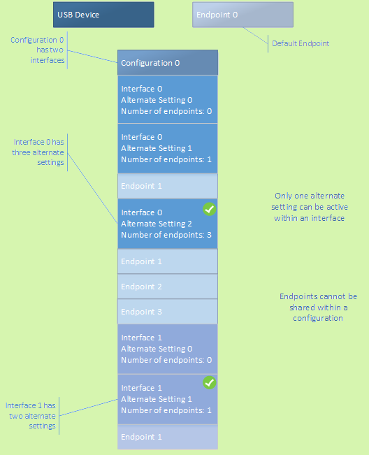

I looked back at my page recently and realized that my last few articles have been following a fibonacci pattern in how many months apart I've written them. I just started a job at CharterUP a few months ago and have been a bit too busy to work on all my personal projects, but I figured I have to at least preserve this pattern if I can.
For today's article, I'm going back to a project I started back in July: creating a custom 'keyboard' for my computer using a dancepad I ordered on Amazon. To make the article a bit more interesting, I'm going to generalize it away from dancepads specifically and talk about how you can turn any USB device in general into a custom peripheral for your computer!
A Quick Note on USB Safety
Before I get into an article on how to read USB data and program your own input devices, its important to understand the potential dangers of trying this with any old USB device you find. You may already be aware that there a number of ways plugging in a USB device can ruin your computer, or even worse, install malware that hides inside it. Google's cybersecurity Red Team was able to 'steal' a significant amount of information about Google Glass in a test of their systems vulnerabilities all starting with a malicious USB plasma ball.
So before you decide on a device to follow along with, be sure its one you can trust. Nothing is going to be 100% safe, but its always a good idea to make sure the vendor you purchased your device is trustworthy and even possibly plugging it in to an old laptop before using it on your main computer to check its behavior.
With that out of the way, lets get started!
USB Background
The Universal Serial Bus (USB) is an industry standard for cable, connection, and communication protocol between peripherals and computers. All USBs plugged into your computer are identified by a VID / PID combination assigned by the USB-IF.
- VID: Vendor IDs are 16-bit numbers unique to companies / manufacturers (typically of the form 0x####)
- PID: Product IDs are 16-bit numbers assigned by the company which are unique to each device they produce (typically of the form 0x####)
- USB-IF: The USB Implementers Forum is a non-profit corporation which maintains the USB standard by overseeing the development of USB devices
These IDs will be important in both telling our program which device to listen for input from and also telling our computer to allow interfacing with this device manually. To find the VID and PID for your USB peripheral, look through the Device Manager on Windows or System Information on Mac. If you get stuck you can look here.
USBs are laid out as a collection of configurations each of which may have any number of interfaces which are made up of any number of endpoints. On a basic level each layer is responsible for the following:
- Configurations: Define the main functionality of the device (specific config is selected by the device driver)
- Interfaces: Typically one-to-one with device functions and describe data transfer requirements for the function it is associated with
- Endpoints: Buffer on the hardware itself which can send or recieve data
- Control Endpoints: Bidirectional data transfer used to obtain device info and handle configuration (at least one is required and is always set at address 0)
- Data Endpoints: Set to either IN or OUT relative to the host

USB Device Layout diagram from Windows
Reading USB Data with Python
For reading the stream of USB data from our device, we can use the python usb library libusb. It's possible that the drivers on your device are not compatible with this library. In this case, you can use Zadig to install the drivers necessary for libusb-based applications.
Once you've pip-installed libusb and are setup to work with your device, we can start our file as follows:
import usb.core
import usb.util
import pygame # optional
VID = 0x0079 # replace this with your device's vendor id
PID = 0x0011 # replace this with your device's product id
dev = usb.core.find(idVendor = VID, idProduct = PID)
if dev is None:
raise ValueError('Device not found')
# set the active configuration. With no arguments, the first
# configuration will be the active one
device.set_configuration()
# get an endpoint instance
config = device.get_active_configuration()
interface = config[(0,0)]
endpoint = usb.util.find_descriptor(
interface,
# match the first IN endpoint
custom_match = \
lambda e: \
usb.util.endpoint_direction(e.bEndpointAddress) == \
usb.util.ENDPOINT_IN)
assert endpoint is not None
import usb.util
import pygame # optional
VID = 0x0079 # replace this with your device's vendor id
PID = 0x0011 # replace this with your device's product id
dev = usb.core.find(idVendor = VID, idProduct = PID)
if dev is None:
raise ValueError('Device not found')
# set the active configuration. With no arguments, the first
# configuration will be the active one
device.set_configuration()
# get an endpoint instance
config = device.get_active_configuration()
interface = config[(0,0)]
endpoint = usb.util.find_descriptor(
interface,
# match the first IN endpoint
custom_match = \
lambda e: \
usb.util.endpoint_direction(e.bEndpointAddress) == \
usb.util.ENDPOINT_IN)
assert endpoint is not None
This code finds the unique device we are targeting by its IDs, gets the first configuration, interface, and input data endpoint for us to read through. I would encourage printing out some of these entities to get an idea of what sort of properties they contain. A few of them we will use and a few others may just be interesting to look at.
From here, we can read the data as follows:
endpoint_address = endpoint.bEndpointAddress
packet_size = endpoint.wMaxPacketSize
while True:
for event in pygame.event.get():
if event.type == pygame.QUIT:
pygame.quit()
data = device.read(endpoint_address, packet_size)
packet_size = endpoint.wMaxPacketSize
while True:
for event in pygame.event.get():
if event.type == pygame.QUIT:
pygame.quit()
data = device.read(endpoint_address, packet_size)
You'll notice that I used pygame for my loop since I'll be using it anyways to display my inputs as I test things out. Feel free to set up your loop however you'd like in order to read the data from your device continuously (be sure to add a stop condition!)
From here, interpreting the input is a matter of testing device functions and looking at the response. Unfortunately, the dance pad I got for $26.99 didn't come with a ton of documentation for this use case, so I had to spend a bit of time messing around with it and figuring out what my stream of data meant in terms of input.
But alas, once you've decoded your input stream, a world of possibilities is opened to you!
Building out your Custom Peripheral
My plan was to build an interface to see what inputs were being recieved and then adding a bit of debounce to make my inputs a bit cleaner. There was a bit of work to be done to get this window to show on top of the others when I clicked away from it, but you can find my Python solution to that in the resources at the endpoint of the article.
Using my under-the-desk dancepad to read a PDF and control a YouTube video
If you can't see the video, you can watch it here
I'd say this first iteration came out quite well. You'll have to excuse the low-quality of the recording, I didn't have a particularly good setup to show you both my window and the buttons I was pressing. For this setup, I used the keyboard library to press the arrow keys and space bar in response to the arrow and center tiles of the dancepad. It was useful that this library specifically worked regardless of window focus by default, which wasn't the case with a few of the others I had looked at.
A few of the other ideas for this that you can try include:
- Generalizing the interface to accomodate different command settings. Some combination of inputs would allow you switch through and lock the device into a different control setting.
- Using the inputs to control the mouse by lateral movements and clicking.
- Program inputs to commonly used sequences of characters in a given type setting.
- Window control (tabbing through screens, opening windows and tabs, etc.)
- Adding even more peripherals to completely abstract away for the keyboard and mouse (a wheel, gear stick, and dashboard buttons).
Whatever device you have, there are a million cool ways to personalize it for the use case you have in mind. Now that I've gone through the process of making this one, I'm excited to start collecting some more interesting USB peripherals and completely futurizing my setup! If you have an idea for one or end up building something of your own, please reach out, I'd love to hear about it!
Until next time!
Resources
- CISA Advice on USB Security
- USB Device Layout
- libusb (Python library for interfacing with USB devices)
- keyboard (Python library for interfacing with keyboards)
- Repository for Dancepad Code